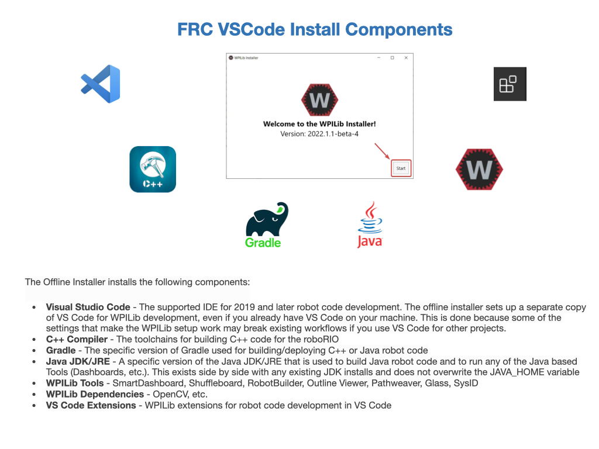

VSCode and WPILib Install
An Integrated Development Environment (IDE) is a software tool that is used to make writing code easier. Some of the main things IDEs will help with include:
Check the syntax of your code to ensure you don’t have any errors.
Organize your files and give you a convenient way to view them.
Allow you to navigate through your code easily.
Applies colour schemes to your code so it’s easier to interpret.
Some will have code completion, which will actually fill in some code for you.
Visual Studio Code (VSCode) is the supported IDE for programming an FRC robot. If you don’t have VSCode installed on your computer then follow the WPILib Installation Guide on the FRC Documentation Website. If you’re using Windows, then these instructions will also install the WPI Library which is used for programming the FRC robot. The link to download the latest software is somewhat hidden, you can find it under Prerequisites on the WPILib Installation Guide pages, click on the Github link. Or try the Latest Releases page. Scroll down the Github release page to find the downloads. Additional information is also found at FRC Documentation VSCode Overview.
You should use the online installer as it will dynamically load other modules on the internet all by itself, but if you can use the offline installer to set up a separate copy of VS Code for WPILib development, even if you already have VS Code on your machine. This is done because some of the settings that make the WPILib setup work may break existing workflows if you use VS Code for other projects.
Notes for MacOS
Ensure that you eject the WPILib Installer after install, otherwise you will run into problems when a new release is published and you run the new installer.
You will need to install the XCode Command Line Tools in order to run the simulator. To check if you have them installed type xcode-select -p. It should display /Library/Developer/CommandLineTools if you already have them installed.
If you don’t have the XCode Command Line Tools on your machine then enter the command xcode-select –install to install. The package is about 1.2 GB. For additional information see How to Install Xcode Command Line Tools on a Mac.
If the simulator crashes try Simulation crashes on Mac after updating WPILib to resolve the issue. If that doesn’t work then try the solution in macOS Simulation fails to launch in Visual Studio Code.
Occasionally, the system will throw a Killed: 9 when trying to start the Simulator. In most cases, rebooting your Mac will solve the issue.
Upgrading Software
A new version of the WPILib is released each year on the same day that the new competition is announced. It’s important that everyone has the latest software. Upgrading to the new version is essentially the same as doing a new install. Here’s a direct link to the latest Release down load page. Follow the instructions for Running the Installer.
After upgrading VSCode will import each project to the latest version. Answer Yes to each prompt.

As soon as you open the upgraded project VSCode will start to run a compile. This will often produce build errors that you need to resolve. You will probably have to import 3rd party software like Phoenix and REVLib. Instructions on installing and configuring these libraries is detailed in the next section. Also see Importing a Gradle Project for more details on importing projects from previous season.
To upgrade from the kickoff release simply download and run the new installer and it will update your current installation. If you already have the latest WPILib vscode installed, it will detect it and you can simply click “next” for that installation step. After installation, vscode will prompt you when opening your robot project whether you want to upgrade it to this version. During the build season there will most likely be new sub-releases published that require the use of the WPILib installer.